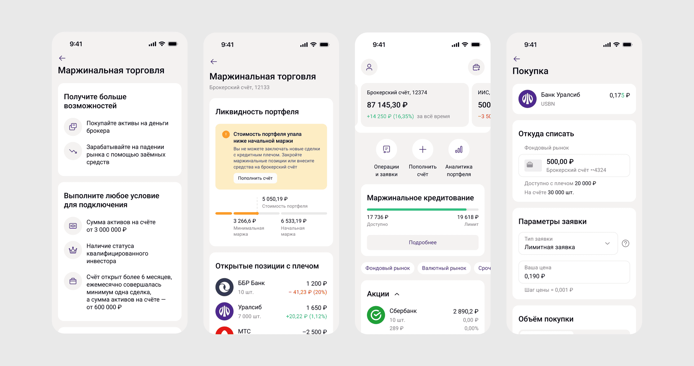

Маржинальная торговля
Новый инструмент, который позволяет клиенту торговать не только на собственные средства, но и на средства брокера. Функционал затронул не один экран, а почти весь путь инвестора — от аналитики портфеля до выставления заявки.
Обзор
Маржинальная торговля это не отдельный экран, а изменение самой природы портфеля: у клиента появляются собственные и заёмные средства одновременно, и это должно быть понятно в каждой точке взаимодействия.
Задача
Внедрить функционал маржинальной торговли так, чтобы:
Состояние портфеля было прозрачным —в любой момент клиент понимает, где его собственные средства, а где заёмные.
Инструмент не путал пользователей, которые им не пользуются — большинство клиентов торгуют без плеча, и для них ничего не должно было усложниться.
Изменения были согласованы с реальными ограничениями брокера — доступное плечо, лимиты и риски должны были рассчитываться корректно на уровне интерфейса, а не только "на бумаге"
Процесс
Самое сложное было разобраться в механике инструмента. Я торговала в приложениях конкурентов, чтобы понять специфику инструмента и выявить как можно больше корнер-кейсов на этапе проектирования
Получилось собрать набор референсов, который позвоялет выявить общие паттерны использования инструмента.

Решение
Собрала сценарий, затронула почти все экраны приложения. Проработала статусную модель состояния портфеля и предупреждения о маржин-коллах. Согласовала флоу с бизнес-заказчиками и прошла ревью команды дизайна

Результат
В приложении стала доступна торговля ценными бумагами за счёт средств брокера — новый инструмент для более опытных инвесторов, встроенный в уже привычный интерфейс
